general-view
general-view
// Source document: tests/KerML_and_SysML_grammars/SysML-graphical-bnf-corrected-marked_up.kgbnf
// Generated by bnf_grammar_processor at: 2025-12-04T19:29:18Z
// Source document: tests/KerML_and_SysML_spec_sources/SysML-spec.html
// Generated by bnf_grammar_processor at: 2025-11-28T15:06:37Z
// Corrected manually by HP de Koning
element =
dependencies-and-annotations-element
| general-element
| element-inside-textual-compartment
compartment =| general-compartment
general-compartment =
general-view
general-view =
(general-element)*
(dependencies-and-annotations-element)*
(ellipsis-at-lower-left-corner)?
ellipsis-at-lower-left-corner = '...'
general-element =
general-node
| general-relationship
element-node =
usage-node | definition-node | annotation-node | namespace-node
element-inside-textual-compartment =
rel-name =
Identification
| QualifiedName
// Note. An element inside a textual compartment is selected by graying out a substring containing the element. The grayed-out section must cover a single element within the textual syntax inside the compartment.
dependencies-and-annotations-element =| dependencies-element
dependencies-element =|
binary-dependency
| n-ary-dependency
binary-dependency =

n-ary-dependency =
&n-ary-association-dot (n-ary-dependency-client-or-supplier-link &element-node)+
n-ary-dependency-client-or-supplier-link =
n-ary-dependency-client-link
| n-ary-dependency-supplier-link
n-ary-association-dot =
n-ary-dependency-client-link =

n-ary-dependency-supplier-link =
// Note. An n-ary dependency must have two or more client elements or two or more supplier elements.
dependencies-and-annotations-element =|
annotation-node
| annotation-link
annotation-node =
comment-node
| documentation-node
| textual-representation-node
text-block = (LINE_TEXT)*
comment-node =
comment-without-keyword
| comment-with-keyword
comment-without-keyword =
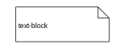
comment-with-keyword =
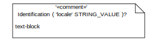
documentation-node =

documentation-compartment =
 Identification
text-block
Identification
text-block
textual-representation-node =

language-string = 'language' '=' STRING_VALUE
annotation-link =
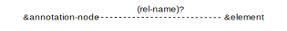
annotated-element =
element
| element-inside-textual-compartment
// Note. A comment node may be attached to zero, one, or more than one annotated elements. All other annotation nodes must be attached to one and only one annotated element.
general-node =| namespace-node
namespace-node =| package-node
package-node =
package-with-name-inside
| package-with-name-in-tab
| imported-package-with-name-inside
| imported-package-with-name-in-tab
package-with-name-inside =

package-with-name-in-tab =

imported-package-with-name-inside =

imported-package-with-name-in-tab =
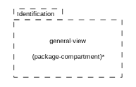
package-compartment =
general-compartment
| documentation-compartment
| packages-compartment
| members-compartment
| relationships-compartment
compartment =| package-compartment
packages-compartment =
 packages-compartment-contents
packages-compartment-contents
packages-compartment-contents = packages-compartment-element* '…'?
packages-compartment-element = el-prefix? Identification
members-compartment =
 members-compartment-contents
members-compartment-contents
members-compartment-contents = members-compartment-element* '…'?
members-compartment-element = el-prefix? (DefinitionElement | UsageElement)
relationships-compartment =
 relationships-compartment-contents
relationships-compartment-contents
relationships-compartment-contents = (relationships-compartment-element)* '…'?
relationships-compartment-element = el-prefix? relationship-name QualifiedName
relationship-name =
'defines' | 'defined by' | 'specializes' | 'specialized by' | 'connect to'
| 'subsets' | 'subsetted by' | 'performs' | 'performed by' | 'allocated' | 'allocated to'
| 'satisfy' | 'satisfied by'
general-relationship =|
import
| top-level-import
| recursive-import
| owned-membership
| unowned-membership
import =

top-level-import =
recursive-import =

owned-membership =
unowned-membership =

general-node =| type-node
type-node =
definition-node
| usage-node
general-node =| usage-node definition-node
namespace-node =| type-node
definition-name-with-alias =
DefinitionDeclaration
( '«alias»' ( QualifiedName (',' QualifiedName)* ) )?
usage-name-with-alias =
'^'? UsageDeclaration
( '«alias»' ( QualifiedName (',' QualifiedName)* ) )?
compartment-stack = (compartment)*
compartment =|
features-compartment
| variants-compartment
| variant-elementusages-compartment
features-compartment =
 features-compartment-contents
features-compartment-contents
features-compartment-contents = (features-compartment-element)* '…'?
features-compartment-element = el-prefix? UsagePrefix usage-cp
variants-compartment =
 variants-compartment-contents
variants-compartment-contents
variants-compartment-contents = members-compartment-contents
variant-elementusages-compartment =
 variants-compartment-contents
variants-compartment-contents
general-relationship =|
type-relationship
type-relationship =
subclassification
| subsetting
| definition
| redefinition
| composite-feature-membership
| noncomposite-feature-membership
subclassification =

definition =
subsetting =
reference-subsetting =
redefinition =
composite-feature-membership =
noncomposite-feature-membership =
el-prefix = '^' | '/'
usage-cp = usageDeclaration ValuePart?
extended-def =
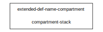
extended-def-name-compartment =
'«' BasicDefinitionPrefix? DefinitionExtensionKeyword+ 'def' '»'
definition-name-with-alias
// Note. This production is only valid for cases where one or more
// DefinitionExtensionKeyword names a MetadataDefinition that is a direct
// or indirect specialization of KerML metaclass SemanticMetadata.
definition-node =| extended-def
extended-usage =

extended-usage-name-compartment =
'«' BasicUsagePrefix? UsageExtensionKeyword+ '»'
usage-name-with-alias
// Note. This production is only valid for cases where one or more
// UsageExtensionKeyword names a MetadataDefinition that is a direct
// or indirect specialization of KerML metaclass SemanticMetadata.
usage-node =| extended-usage
definition-node =| attribute-def
attribute-def =

attribute-def-name-compartment =
'«' DefinitionPrefix 'attribute' 'def' '»'
definition-name-with-alias
usage-node =| attribute
attribute =
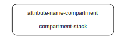
attribute-name-compartment =
'«' UsagePrefix 'attribute' '»'
usage-name-with-alias
compartment =| attributes-compartment
attributes-compartment =
attributes-compartment-contents
attributes-compartment-contents = (attributes-compartment-element)* '…'?
attributes-compartment-element = el-prefix? UsagePrefix usage-cp
definition-node =| enumeration-def
enumeration-def =
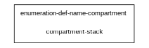
enumeration-def-name-compartment =
'«' DefinitionPrefix 'enum' 'def' '»'
definition-name-with-alias
usage-node =| enumeration
enumeration =
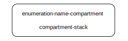
enumeration-name-compartment =
'«' UsagePrefix 'enum' '»'
usage-name-with-alias
compartment =| enums-compartment
enums-compartment =
 enums-compartment-contents
enums-compartment-contents
enums-compartment-contents = (enums-compartment-element)* '…'?
enums-compartment-element = el-prefix? UsagePrefix usage-cp
definition-node =| occurrence-def
general-relationship =| portion-relationship
occurrence-def =
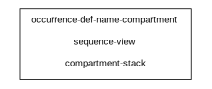
occurrence-def-name-compartment =
'«' DefinitionPrefix 'occurrence' 'def' '»'
definition-name-with-alias
usage-node =|
occurrence
| occurrence-ref
| timeslice-or-snapshot-node
occurrence =
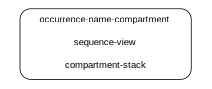
occurrence-ref =

occurrence-name-compartment =
'«' OccurrenceUsagePrefix 'occurrence' '»'
usage-name-with-alias
timeslice-or-snapshot-node =
timeslice
| snapshot
timeslice =
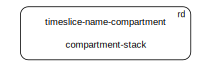
timeslice-name-compartment =
'«timeslice»'
usage-name-with-alias
snapshot =

snapshots-name-compartment =
'«snapshot»'
usage-name-with-alias
event-occurrence-def =
event-occurrence-def-name-compartment =
'«' DefinitionPrefix 'event' 'occurrence' 'def' '»'
definition-name-with-alias
definition-node =| event-occurrence-def
event-occurrence = 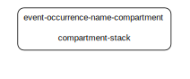
event-occurrence-name-compartment =
'«' OccurrenceUsagePrefix 'event' 'occurrence' '»'
usage-name-with-alias
usage-node =| event-occurrence
event-edge =
eventer = usage-node | definition-node
portion-relationship =

compartment =|
occurrences-compartment
| individuals-compartment
| timeslices-compartment
| snapshots-compartment
| sequence-compartment
occurrences-compartment =
 occurrences-compartment-contents
occurrences-compartment-contents
occurrences-compartment-contents = (occurrences-compartment-element)* '…'?
occurrences-compartment-element = el-prefix? OccurrenceUsagePrefix usage-cp
individuals-compartment =
individuals-compartment-contents
individuals-compartment-contents = (individuals-compartment-element)* '…'?
individuals-compartment-element = occurrences-compartment-element
timeslices-compartment =
timeslices-compartment-contents
timeslices-compartment-contents = (timeslices-compartment-element)* '…'?
timeslices-compartment-element = occurrences-compartment-element
snapshots-compartment =
snapshots-compartment-contents
snapshots-compartment-contents = (snapshots-compartment-element)* '…'?
snapshots-compartment-element = occurrences-compartment-element
sequence-compartment =
sequence-view
sequence-view = (sq-graphical-element)*
sq-graphical-element =
sq-graphical-node
| sq-graphical-relationship
| dependencies-and-annotations-element
sq-graphical-node = sq-head-node | lifeline
sq-head-node = sq-part | sq-port
sq-part =
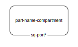
sq-port =
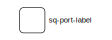
sq-port-label = UsageDeclaration
sq-l-node =
lifeline
| sq-proxy
lifeline =
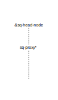
sq-proxy =
 |
|

proxy-label = '.'? FeatureChainMember
sq-graphical-relationship = message | sq-succession
succession-label = UsageDeclaration?
sq-succession =

succession-label = Identification
// Note: the proxy nodes attached to a succession must refer to an event
definition-node =| item-def
interconnection-element =| item| item-ref
item-def =
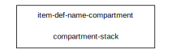
item-def-name-compartment =
'«' DefinitionPrefix 'item' 'def' '»'
definition-name-with-alias
usage-node =| item
item =
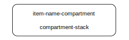
item-name-compartment =
'«' OccurrenceUsagePrefix 'item' '»'
usage-name-with-alias
item-ref =

compartment =| items-compartment
items-compartment =
items-compartment-contents
items-compartment-contents = (items-compartment-element)* '…'
items-compartment-element = el-prefix? OccurrenceUsagePrefix usage-cp
definition-node =| part-def
interconnection-element =| part | part-ref
part-def =

part-def-name-compartment =
'«' DefinitionPrefix 'part' 'def' '»'
definition-name-with-alias
usage-node =| part
part =

part-name-compartment =
'«' OccurrenceUsagePrefix 'part' '»'
usage-name-with-alias
part-ref =
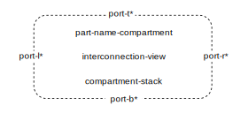
compartment =|
parts-compartment
| directed-features-compartment
| interconnection-compartment
parts-compartment =
parts-compartment-contents
parts-compartment-contents = (parts-compartment-element)* '…'?
parts-compartment-element = el-prefix? OccurrenceUsagePrefix usage-cp
directed-features-compartment =
 directed-features-compartment-contents
directed-features-compartment-contents
directed-features-compartment-contents = (directed-features-compartment-element)* '…'?
directed-features-compartment-element =
el-prefix FeatureDirection DefinitionBodyItem*
interconnection-compartment =
 interconnection-view
interconnection-view
interconnection-view =|
(interconnection-element)*
(dependencies-and-annotations-element)*
(ellipsis-at-lower-left-corner)?
general-view =| interconnection-view
definition-node =| port-def
port-def =
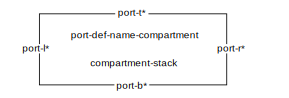
port-def-name-compartment =
'«' DefinitionPrefix 'port' 'def' '»'
definition-name-with-alias
usage-node =| port-usage
port-usage =

port-name-compartment =
'«' OccurrenceUsagePrefix 'port' '»'
usage-name-with-alias
compartment =| ports-compartment
ports-compartment =
 ports-compartment-contents
ports-compartment-contents
ports-compartment-contents = (ports-compartment-element)* '…'?
ports-compartment-element = el-prefix? OccurrenceUsagePrefix usage-cp
interconnection-element =| port-def | port-usage
pdh =
|
 |
|
pdv =
 |
|
 |
|

port-l =
 |
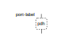
|
|
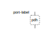
|
 |
proxy-v
|
proxy-v
port-r =
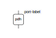
|
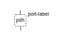
|
 |
proxy-v
|
proxy-v
port-t =
 |
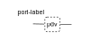
|
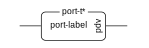
|
proxy-h
|
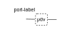
|
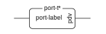
|
proxy-h
port-b =
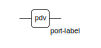
|
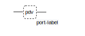
|
 |
proxy-h
|
proxy-h
port-label = QualifiedName (':' QualifiedName)?
proxy-v =
 |
|

proxy-h =
 |
|

// Note. Dotted line port productions (references) are only possible for nested ports
// Note. The proxy option of a port production is valid only on a part usage contained within an interconnection view.
definition-node =| connection-def
connection-def =

connection-def-name-compartment =
'«' DefinitionPrefix 'connection' 'def' '»'
definition-name-with-alias
usage-node =| connection
connection =

connection-name-compartment =
'«' OccurrenceUsagePrefix 'connection' '»'
usage-name-with-alias
compartment =| connections-compartment
connections-compartment =
connections-compartment-contents
connections-compartment-contents = (connections-compartment-element)* '…'?
connections-compartment-element =
el-prefix? OccurrenceUsagePrefix UsageDeclaration
interconnection-element =|
connection-def
| connection
| connection-relationship
| attribute
connection-relationship =
binding-connection
| connection-graphical
| n-ary-connection
| n-ary-connection-def
| connection-definition-elaboration
| connection-usage-elaboration
| connection-def-graphical
connection-graphical =
 |
|

c-adornment =
(a-property | a-direction | a-subsetting |a-redefinition)*
a-property =
'ordered' | 'nonunique' | 'abstract' | 'derived' | 'readonly'
a-direction =
'in' | 'out' | 'inout'
a-subsetting =
'subsets' OwnedSubsetting (',' OwnedSubsetting)*
a-redefinition =
'redefines' OwnedRedefinition (',' OwnedRedefinition)*
connection-end = usage-node | usage-edge
usage-edge =| connection-graphical | binding-connection
connection-label = UsageDeclaration
connection-def-graphical =
|
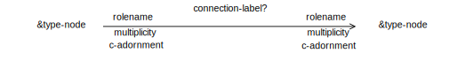
general-relationship =| connection-def-graphical
cdef-label = Identification
n-ary-connection-def =
n-ary-def-connection-dot n-ary-def-segment+
n-ary-def-connection-dot =
n-ary-def-segment =
definition-node =| n-ary-def-connection-dot
general-relationship =| n-ary-def-segment
n-ary-connection =
n-ary-connection-dot n-ary-segment+
n-ary-connection-dot =

usage-node =| n-ary-connection-dot
cdot-label = UsageDeclaration
n-ary-segment =
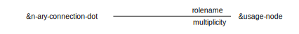
binding-connection =

rolename = Identification?
multiplicity = MultiplicityRange?
connection-definition-elaboration =
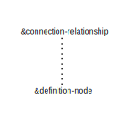
connection-usage-elaboration =
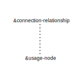
// Note. The usage-nodes at the ends of a binding-connection must be of compatible types.
definition-node =| interface-def
interconnection-element =| interface
interface-def =

interface-def-name-compartment =
'«' DefinitionPrefix 'interface' 'def' '»'
definition-name-with-alias
usage-node =| interface
interface =
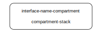
interface-name-compartment =
'«' OccurrenceUsagePrefix 'interface' '»'
usage-name-with-alias
compartment =|
interfaces-compartment
| ends-compartment
interfaces-compartment =
interfaces-compartment-contents
interfaces-compartment-contents = (interfaces-compartment-element)* '…'?
interfaces-compartment-element =
el-prefix? OccurrenceUsagePrefix InterfaceUsageDeclaration
ends-compartment =
 ends-compartment-contents
ends-compartment-contents
ends-compartment-contents = (ends-compartment-element)* '…'?
ends-compartment-element = QualifiedName (':' QualifiedName)?
connection-relationship =|
interface-connection
interface-connection =
interface-label = UsageDeclaration?
definition-node =| allocation-def
allocation-def =

allocation-def-name-compartment =
'«' DefinitionPrefix 'allocation' 'def' '»'
definition-name-with-alias
usage-node =| allocation
allocation =
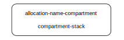
allocation-name-compartment =
'«' OccurrenceUsagePrefix 'allocation' '»'
usage-name-with-alias
compartment =| allocations-compartment
allocations-compartment =
allocations-compartment-contents
allocations-compartment-contents = (allocations-compartment-element)* '…'?
allocations-compartment-element =
el-prefix? OccurrenceUsagePrefix AllocationUsageDeclaration UsageBody*
general-relationship =| allocate-relationship
allocate-relationship =

allocation-node =
general-node
| element-in-textual-compartment
usage-edge =| allocate-relationship
definition-node =| flow-def
flow-def =

flow-def-name-compartment =
'«' DefinitionPrefix 'succession'? 'flow' 'def' '»'
definition-name-with-alias
usage-node =| flow-node
flow-node =

flow-name-compartment =
'«' OccurrenceUsagePrefix ( 'message' | 'succession'? 'flow' ) '»'
usage-name-with-alias
compartment =| flows-compartment
flows-compartment =
 flows-compartment-contents
flows-compartment-contents
flows-compartment-contents = (flows-compartment-element)* '...'?
flows-compartment-element =
el-prefix? OccurrenceUsagePrefix
( 'message' MessageDeclaration
| 'succession'? FlowDeclaration
)
interconnection-element =|
flow-def
| flow
connection-relationship =|
message-connection
| flow
| succession-flow
| flow-on-connection
usage-edge =| message | flow | succession-flow
msg-end-node =
occurrence| sq-l-node| item | part | port | action | state
| use-case | verification-case | analysis-case | proxy
message =

// Note: proxy nodes and ends of messages must refer to occurrences
message-label =
UsageDeclaration? ('of' FlowPayloadFeatureMember)? | FlowPayloadFeatureMember
flow =

flow-label =
UsageDeclaration? ('of' FlowPayloadFeatureMember)? | FlowPayloadFeatureMember
flow-end-node =
parameter | proxy
// Note: proxy nodes at ends of flows must refer to directed features
succession-flow =
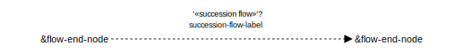
succession-flow-label = flow-label
flow-on-connection =

flow-node =
flow-node-r
| flow-node-l
| sflow-node-r
| sflow-node-l
| message-node-r
| message-node-l
flow-node-r =

flow-node-l =
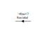
sflow-node-r =
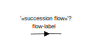
sflow-node-l =

message-node-r =

message-node-l =
flow-label =
Identification | FlowPayloadFeatureMember
definition-node =| action-def
action-def =

action-def-name-compartment =
'«' DefinitionPrefix 'action' 'def' '»'
definition-name-with-alias
usage-node =|
action
| perform-action-usage
action =

action-name-compartment =
'«' OccurrenceUsagePrefix 'action' '»'
usage-name-with-alias
perform-action-usage =
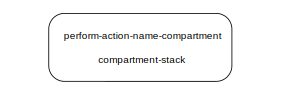
action-ref =

perform-action-name-compartment =
'«' OccurrenceUsagePrefix 'perform' 'action' '»'
usage-name-with-alias
compartment =|
actions-compartment
| perform-actions-compartment
| parameters-compartment
| action-flow-compartment
actions-compartment =
actions-compartment-contents
actions-compartment-contents = (actions-compartment-element)* '…'?
actions-compartment-element =
el-prefix? OccurrenceUsagePrefix ActionUsageDeclaration
perform-actions-compartment =
 perform-actions-compartment-contents
perform-actions-compartment-contents
perform-actions-compartment-contents = (perform-actions-compartment-element)* '…'?
perform-actions-compartment-element =
el-prefix? OccurrenceUsagePrefix PerformActionUsageDeclaration
parameters-compartment =
 parameters-compartment-contents
parameters-compartment-contents
parameters-compartment-contents = (parameters-compartment-element)* '…'?
parameters-compartment-element =
el-prefix? FeatureDirection UsageDeclaration ValueOrFlowPart? DefinitionBodyItem*
performed-by-compartment =
 performed-by-compartment-contents
performed-by-compartment-contents
performed-by-compartment-contents = QualifiedName* '…'?
action-flow-compartment =
 action-flow-view
action-flow-view
action-flow-view =
(dependencies-and-annotations-element)*
(action-flow-element)*
(perform-action-swimlanes)?
action-flow-element =|
action-ref
| action
| action-flow-node
| action-flow-relationship
action-flow-node =
start-node
| done-node
| terminate-node
| fork-node
| join-node
| decision-node
| merge-node
| send-action-node
| accept-action-node
| while-loop-action-node
| for-loop-action-node
| if-else-action-node
| assign-action-node
action-flow-relationship =
flow
| aflow-succession
| binding-connection
| else-branch
param-l =
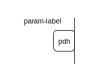
|
 |
proxy-v
|
proxy-v
param-r =
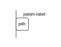
|
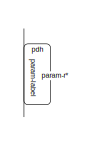
|
proxy-v
param-t =
 |
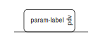
|
proxy-h
|
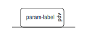
|
proxy-h
param-b =
 |
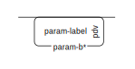
|
proxy-h
|
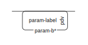
|
proxy-h
param-label = QualifiedName (':' QualifiedName)*
start-node =
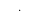
done-node =

terminate-node =
fork-node =

join-node =

decision-node =

merge-node =
send-action-node =
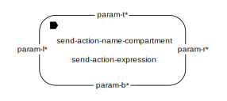
send-action-name-compartment =
'«' OccurrenceUsagePrefix 'send' 'action' '»'
usage-name-with-alias
send-action-expression = NodeParameterMember 'to' NodeParameterMember
accept-action-node =

accept-action-name-compartment =
'«' OccurrenceUsagePrefix 'accept' 'action' '»'
usage-name-with-alias
accept-action-expression = AcceptParameterPart
while-loop-action-node =
while-condition =condition-expression
until-condition = condition-expression
while-loop-action-name-compartment =
'«' OccurrenceUsagePrefix 'loop' '»'
usage-name-with-alias
for-loop-action-node = 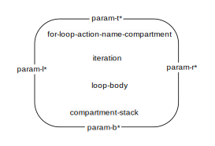
iteration =iteration-expression
loop-body =action-body
for-loop-action-name-compartment =
'«' OccurrenceUsagePrefix 'loop' '»'
usage-name-with-alias
if-else-action-node =

if-condition = condition-expression
then-body =action-body
else-body =action-body
ifelse-action-name-compartment =
'«' OccurrenceUsagePrefix 'if' '»'
usage-name-with-alias
action-body =
action-body-textual | action-flow-view
condition-expression =
ExpressionParameterMember
iteration-expression =
ForVariableDeclarationMember 'in' NodeParameterMember
action-body-textual =
ActionBodyParameterMember
assign-action-node =

assign-action-name-compartment =
'«' OccurrenceUsagePrefix 'assign' '»'
usage-name-with-alias
perform-actions-swimlanes = (swimlane)*
swimlane =

parameter = param-l | param-r | param-t | param-b
aflow-succession =

else-branch =

perform-edge =

performer-node = part | action | part-def | action-def | distinguished-parameter
usage-edge =| succession perform-edge
guard-expression = '[' OwnedExpression ']'
// Note. All swimlanes are attached to each other on vertical edges and aligned along the top and bottom horizontal edges.
// Note. The proxy option of a parameter production is valid only on an action usage contained within an action flow view.
definition-node =| state-def
state-def =
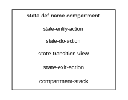
state-def-name-compartment =
'«' DefinitionPrefix 'state' 'def' '»'
definition-name-with-alias
('«' 'parallel' '»')?
usage-node =|
state
| exhibit-state-usage
state =
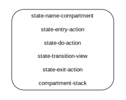
state-ref =
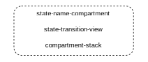
state-name-compartment =
'«' OccurrenceUsagePrefix 'state' '»'
usage-name-with-alias
('«' 'parallel' '»')?
exhibit-state-usage =

state-subaction-body = state-subaction-body-textual | action-flow-view
state-subaction-body-textual = state-subaction-declaration? ( '{' ActionBodyItem* '}' )?
state-subaction-declaration =
PerformActionUsageDeclaration
| AcceptNodeDeclaration
| SendNodeDeclaration
| AssignmentNodeDeclaration
state-do-action =
state-subaction-body
state-entry-action =
 state-subaction-body
state-subaction-body
state-exit-action =
 state-subaction-body
state-subaction-body
entry-action =
|
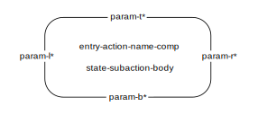
entry-action-name-comp =
'«' 'entry' OccurrenceUsagePrefix 'action' '»'
usage-name-with-alias
exit-action =
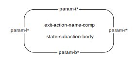
exit-action-name-comp =
'«' 'exit' OccurrenceUsagePrefix 'action' '»'
usage-name-with-alias
do-action =

do-action-name-comp =
'«' 'do' OccurrenceUsagePrefix 'action' '»'
usage-name-with-alias
exhibit-state-name-compartment =
'«exhibit-state»'
state-name-compartment
compartment =|
states-compartment
| state-actions-compartment
| exhibit-states-compartment
| successions-compartment
| state-transition-compartment
states-compartment =
 states-compartment-contents
states-compartment-contents
states-compartment-contents = (states-compartment-element)* '…'?
states-compartment-element =
el-prefix? OccurrenceUsagePrefix ActionUsageDeclaration
state-actions-compartment =
state-actions-compartment-contents
state-actions-compartment-contents = (state-actions-compartment-element)* '…'?
state-actions-compartment-element =
el-prefix? EntryActionMember | DoActionMember | ExitActionMember
exhibit-states-compartment =
exhibit-states-compartment-contents
exhibit-states-compartment-contents = exhibit-state-scompartment-element* '…'?
exhibit-states-compartment-element-compartment = UsageDeclaration
successions-compartment =
 successions-compartment-contents
successions-compartment-contents
successions-compartment-contents = QualifiedName* '…'?
state-transition-compartment =
 state-transition-view
state-transition-view
state-transition-view =
(state-transition-element)*
(dependencies-and-annotations-element)*
state-transition-element =
state-transition-node
| transition
| st-succession
state-transition-node =
state
| state-ref
| start-node
| entry-action
| do-action
| exit-action
| done-node
| fork-node
| join-node
| decision-node
| merge-node
| terminate-node
| action
| perform-action-usage
| action-ref
transition =
|
state-source = state | state-ref
transition-label = trigger-expression '/' ActionUsage
trigger-expression = AcceptParameterPart (guard-expression)?
st-succession =
 |
|
exhibit-edge =
exhibitor = part | part-def
general-relationship =| exhibit-edge
usage-edge =| transition | st-succession | exhibit-edge
definition-node =| calc-def
calc-def =

calc-def-name-compartment =
'«' DefinitionPrefix 'calc' 'def' '»'
definition-name-with-alias
usage-node =| calc
calc =
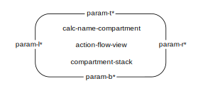
calc-name-compartment =
'«' OccurrenceUsagePrefix 'calc' '»'
usage-name-with-alias
action-flow-element =|
calc-def
| calc
compartment =|
calcs-compartment
| result-compartment
calcs-compartment =
calcs-compartment-contents
calcs-compartment-contents = calcs-compartment-element* '…'?
calcs-compartment-element = el-prefix? OccurrenceUsagePrefix ActionUsageDeclaration
result-compartment =
result-compartment-contents
result-compartment-contents = OwnedExpression
definition-node =| constraint-def
constraint-def =
constraint-def-name-compartment =
'«' DefinitionPrefix 'constraint' 'def' '»'
definition-name-with-alias
usage-node =
constraint
| assert-constraint-node
constraint =
constraint-ref =
constraint-name-compartment =
'«' OccurrenceUsagePrefix 'constraint' '»'
usage-name-with-alias
assert-constraint-node =

assert-constraint-name-compartment =
'«assert constraint»'
constraint-name-compartment
assume-constraint-node =
assume-constraint-name-compartment =
'«' OccurrenceUsagePrefix 'assume' 'constraint' '»'
usage-name-with-alias
usage-node =| assume-constraint-node | assert-constraint-node
assume-edge =
assumer = requirement | requirement-def
general-relationship =| assume-edge
assert-edge =
assertor = usage-node | definition-node
general-relationship =| assert-edge
compartment =|
constraints-compartment
| assert-constraints-compartment
constraints-compartment =
 constraints-compartment-contents
constraints-compartment-contents
constraints-compartment-contents = (constraints-usage-compartment-element)* '…'?
constraints-usage-compartment-element =
el-prefix? OccurrenceUsagePrefix ConstraintUsageDeclaration CalculationBody*
assert-constraints-compartment =
assert-constraints-compartment-contents
assert-constraints-compartment-contents = (assert-constraints-compartment-element)* '…'?
assert-constraints-compartment-element =
el-prefix? OccurrenceUsagePrefix ( 'not' )?
( OwnedSubsetting FeatureSpecializationPart? | UsageDeclaration )
CalculationUsageParameterPart CalculationBody
interconnection-element =|
constraint-ref
| constraint
definition-node =|
requirement-def
| concern-def
requirement-def =
requirement-def-name-compartment =
'«' DefinitionPrefix 'requirement' 'def' '»'
definition-name-with-alias
usage-node =
requirement
| satisfy-requirement-usage
| concern
requirement =

requirement-ref =
requirement-name-compartment =
'«' OccurrenceUsagePrefix 'requirement' '»'
usage-name-with-alias
satisfy-requirement-usage =
satisfy-requirement-name-compartment =
'«satisfy requirement»'
requirement-name-compartment
concern-def =

concern-def-name-compartment =
'«' DefinitionPrefix 'concern' 'def' '»'
definition-name-with-alias
concern =

concern-name-compartment =
'«' OccurrenceUsagePrefix 'concern' '»'
usage-name-with-alias
compartment =|
constraints-compartment
| assert-constraints-compartment
compartment =|
requirements-compartment
| require-constraints-compartment
| assume-constraints-compartment
| satisfy-requirements-compartment
| satisfies-compartment
| actors-compartment
| subject-compartment
| stakeholders-compartment
| frames-compartment
requirements-compartment =
 requirements-compartment-contents
requirements-compartment-contents
requirements-compartment-contents = (requirements-compartment-element)* '…'?
requirements-compartment-element =
OccurrenceUsagePrefix ConstraintUsageDeclaration
require-constraints-compartment =
 require-constraints-compartment-contents
require-constraints-compartment-contents
require-constraints-compartment-contents = require-constraint-element* '…'?
require-constraint-element =
el-prefix? requireMemberPrefix? RequirementConstraintUsage
assume-constraints-compartment =
assume-constraints-compartment-contents
assume-constraints-compartment-contents = require-constraint-element* '…'?
satisfy-requirements-compartment =
 satisfy-requirements-compartment-contents
satisfy-requirements-compartment-contents
satisfy-requirements-compartment-contents = text-block
satisfies-compartment =
satisfies-compartment-contents
satisfies-compartment-contents = UsageDeclaration* '…'?
actors-compartment =
actors-compartment-contents
actors-compartment-contents = (actors-compartment-element)* '…'?
actors-compartment-element = el-prefix? MemberPrefix usage-cp
subject-compartment =
 subject-compartment-contents
subject-compartment-contents
subject-compartment-contents = (subject-compartment-element)* '…'?
subject-compartment-element = el-prefix? MemberPrefix usage-cp
stakeholders-compartment =
 stakeholders-compartment-contents
stakeholders-compartment-contents
stakeholders-compartment-contents = (stakeholders-compartment-element)* '…'?
stakeholders-compartment-element = el-prefix? MemberPrefix usage-cp
frames-compartment =
 frames-compartment-contents
frames-compartment-contents
frames-compartment-contents = (frames-compartment-element)* '…'?
frames-compartment-element = el-prefix* MemberPrefix? FramedConcernUsage
concerns-compartment =
 concerns-compartment-contents
concerns-compartment-contents
interconnection-element =|
requirement-ref
| requirement
| concern
| distinguished-parameter
| distinguished-parameter-link
| concern-stakeholder-link
general-relationship =| frame-relationship
subject-actors-stakeholders-node =| requirement
distinguished-parameter =
subject
| actor
| stakeholder
subject =
actor =
 |
|
stakeholder =
subject-name = UsageDeclaration
actor-name = UsageDeclaration
stakeholder-name = UsageDeclaration
distinguished-parameter-link =

frame-relationship =

concern-stakeholder-link =

satisfy-edge =
satisfier = usage-node | definition-node
general-relationship =| satisfy-edge
require-edge =
requirer = usage-node | definition-node
general-relationship =| require-edge
require-constraint-node =
require-constraint-name-compartment =
'«' OccurrenceUsagePrefix 'require' 'constraint' '»'
usage-name-with-alias
usage-node =| require-constraint-node
frame-concern-node =

frame-concern-name-compartment =
'«' OccurrenceUsagePrefix 'frame' 'concern' '»'
usage-name-with-alias
usage-node =| frame-concern-node
frame-edge =
framer = requirement | requirement-def | viewpoint | viewpoint-def
general-relationship =| frame-edge
compartment =| objective-compartment
objective-compartment =
 objective-compartment-contents
objective-compartment-contents
objective-compartment-contents = (objective-compartment-element)* '…'?
objective-compartment-element =
comp-prefix? MemberPrefix ConstraintUsageDeclaration RequirementBody
definition-node =| analysis-def
analysis-def =

analysis-def-name-compartment =
'«' DefinitionPrefix 'analysis' 'def' '»'
definition-name-with-alias
usage-node =| analysis
analysis =

analysis-name-compartment =
'«' OccurrenceUsagePrefix 'analysis' '»'
usage-name-with-alias
compartment =| analyses-compartment
analyses-compartment =
analyses-compartment-contents
analyses-compartment-contents = analyses-compartment-element* '…'?
analyses-compartment-element =
el-prefix? OccurrenceUsagePrefix ConstraintUsageDeclaration CaseBody
action-flow-element =|
analysis-def
| analysis
subject-actors-stakeholders-node =| analysis | analysis-def
definition-node =| verification-def
verification-def =

verification-def-name-compartment =
'«' DefinitionPrefix 'verification' 'def' '»'
definition-name-with-alias
usage-node =| verification
verification =
verification-name-compartment =
'«' OccurrenceUsagePrefix 'verification' '»'
usage-name-with-alias
verify-requirement-node =
verify-requirement-name-compartment =
'«' OccurrenceUsagePrefix 'verify' 'requirement' '»'
usage-name-with-alias
usage-node =| verify-requirement-node
compartment =|
verifications-compartment
| verifies-compartment
| verification-methods-compartment
verifications-compartment =
 verifications-compartment-contents
verifications-compartment-contents
verifications-compartment-contents = (verifications-compartment-element)* '…'?
verifications-compartment-element =
el-prefix? OccurrenceUsagePrefix ConstraintUsageDeclaration CaseBody '…'
verifies-compartment =
verifies-compartment-contents
verifies-compartment-contents = (verifies-compartment-element)* '…'?
verifies-compartment-element = el-prefix? MemberPrefix RequirementVerificationUsage '…'
verification-methods-compartment =
 verification-methods-compartment-contents
verification-methods-compartment-contents
verification-methods-compartment-contents = (verification-methods-compartment-element)* '…'?
verification-methods-compartment-element = MetadataBody
action-flow-element =|
verification-def
| verification
general-relationship =| verify-relationship
verify-relationship =
subject-actors-stakeholders-node =| verification | verification-def
definition-node =| use-case-def
use-case-def =

use-case-def-name-compartment =
'«' DefinitionPrefix 'use' 'case' 'def' '»'
definition-name-with-alias
usage-node =|
use-case
| include-use-case-usage
use-case =

use-case-name-compartment =
'«' OccurrenceUsagePrefix 'use' 'case' '»'
usage-name-with-alias
include-use-case-usage =

include-use-case-name-compartment =
'«include use case»'
requirement-name-compartment
compartment =|
use-cases-compartment
| include-actions-compartment
| includes-compartment
use-cases-compartment =
 use-cases-compartment-contents
use-cases-compartment-contents
use-cases-compartment-contents = use-cases-compartment-element* '…'?
use-cases-compartment-element = el-prefix? OccurrenceUsagePrefix ConstraintUsageDeclaration
include-use-cases-compartment =
include-use-cases-compartment-contents
include-use-cases-compartment-contents = (include-use-cases-compartment-element)* '…'?
include-use-cases-compartment-element =
el-prefix? OccurrenceUsagePrefix
( OwnedSubsetting FeatureSpecializationPart? | UsageDeclaration )
( ValuePart | ActionUsageParameterList )? CaseBody
includes-compartment =
includes-compartment-contents
includes-compartment-contents = (includes-compartment-element)* '…'?
includes-compartment-element =
el-prefix? OccurrenceUsagePrefix
( OwnedSubsetting FeatureSpecializationPart? | UsageDeclaration )
action-flow-element =|
use-case-def
| use-case
general-relationship =| include-use-case-relationship
include-use-case-relationship =
subject-actors-stakeholders-node =| use-case | use-case-def
root-view = framed-view
definition-node =|
viewpoint-def
| view-def
viewpoint-def =

viewpoint-def-name-compartment =
'«' DefinitionPrefix 'viewpoint' 'def' '»'
definition-name-with-alias
view-def =
view-def-name-compartment =
'«' DefinitionPrefix 'view' 'def' '»'
definition-name-with-alias
usage-node =|
viewpoint
| view
| framed-view
viewpoint =
viewpoint-name-compartment =
'«' OccurrenceUsagePrefix 'viewpoint' '»'
usage-name-with-alias
view =

view-name-compartment =
'«' OccurrenceUsagePrefix 'view' '»'
usage-name-with-alias
compartment =|
views-compartment
| viewpoints-compartment
| exposes-compartment
| filters-compartment
| rendering-compartment
views-compartment =
 views-compartment-contents
views-compartment-contents
views-compartment-contents = (views-compartment-element)* '…'
views-compartment-element =
el-prefix? OccurrenceUsagePrefix UsageDeclaration? ValueOrFlowPart? ViewBody
viewpoints-compartment =
 viewpoints-compartment-contents
viewpoints-compartment-contents
viewpoints-compartment-contents = (viewpoints-compartment-element)* '…'?
viewpoints-compartment-element =
el-prefix? OccurrenceUsagePrefix ConstraintUsageDeclaration RequirementBody
exposes-compartment =
 exposes-compartment-contents
exposes-compartment-contents
exposes-compartment-contents = exposes-compartment-element* '…'?
exposes-compartment-element = MembershipExpose | NamespaceExpose
filters-compartment =
filters-compartment-contents
filters-compartment-contents = (filters-compartment-element)* '…'?
filters-compartment-element = el-prefix? MemberPrefix OwnedExpression
rendering-compartment =
 rendering-compartment-contents
rendering-compartment-contents
rendering-compartment-contents = usage-cp* '…'?
interconnection-element =|
viewpoint-def
| viewpoint
| view-def
| view
framed-view =
frameless-view =
general-view
| interconnection-view
| action-flow-view
| state-transition-view
| sequence-view
view-frame-name-compartment = '«view»' QualifiedName (':' QualifiedName)?
view-frame-info-contents = Expose? ElementFilterMember? AnnotatingElement*
view-frame-info-compartment-tr =
view-frame-info-compartment-bl =

view-frame-info-compartment-br =

general-relationship =| expose-relationship
expose-relationship =
expose-r | toplevel-expose-r | recursive-expose-r
expose-r =

toplevel-expose-r =

recursive-expose-r =
// Note. The view frame info compartments are optional elements. The AnnotatingElement* enables adding any relevant supporting information related to a view, possibly using a configurable rendering.
// Note. A model library in Section 9.2.18 defines standard graphical view definitions for SysML. These may be supplemented by further, customized view definitions specific to a model.
annotation-node =| metadata-feature-annotation-node
metadata-feature-annotation-node =

metadata-feature-decl = Identification
metadata-feature-name-value-list =
( metadata-feature-name '=' expression-text )*
metadata-feature-name = Identification
expression-text = text-block
metadata-def =
metadata-def-name-compartment =
'«' BasicUsagePrefix? keyword* 'metadata' 'def' '»'
definition-name-with-alias
// End of BNF
// action-flow-element = // action | action-flow-node | action-flow-relationship | action-ref | analysis | analysis-def | calc // | calc-def | use-case | use-case-def | verification | verification-def
// annotation-node = // metadata-feature-annotation-node
// compartment = // action-flow-compartment | actions-compartment | actors-compartment | allocations-compartment // | analyses-compartment | assert-constraints-compartment | assert-constraints-compartment | assume-constraints-compartment // | attributes-compartment | calcs-compartment | connections-compartment | constraints-compartment // | constraints-compartment | directed-features-compartment | ends-compartment | enums-compartment // | exhibit-states-compartment | exposes-compartment | features-compartment | filters-compartment | flows-compartment // | frames-compartment | general-compartment | include-actions-compartment | includes-compartment // | individuals-compartment | interconnection-compartment | interfaces-compartment | items-compartment // | objective-compartment | occurrences-compartment | package-compartment | parameters-compartment | parts-compartment // | perform-actions-compartment | ports-compartment | rendering-compartment | require-constraints-compartment // | requirements-compartment | result-compartment | satisfies-compartment | satisfy-requirements-compartment // | sequence-compartment | snapshots-compartment | stakeholders-compartment | state-actions-compartment // | state-transition-compartment | states-compartment | subject-compartment | successions-compartment // | timeslices-compartment | use-cases-compartment | variant-elementusages-compartment | variants-compartment // | verification-methods-compartment | verifications-compartment | verifies-compartment | viewpoints-compartment // | views-compartment
// connection-relationship = // flow | flow-on-connection | interface-connection | message-connection | succession-flow
// definition-node = // action-def | allocation-def | analysis-def | attribute-def | calc-def | concern-def | connection-def // | constraint-def | enumeration-def | event-occurrence-def | extended-def | flow-def | interface-def // | item-def | n-ary-def-connection-dot | occurrence-def | part-def | port-def | requirement-def // | state-def | use-case-def | verification-def | view-def | viewpoint-def
// dependencies-and-annotations-element = // annotation-link | annotation-node | dependencies-element
// dependencies-element = // binary-dependency | n-ary-dependency
// general-node = // definition-node | namespace-node | type-node | usage-node
// general-relationship = // allocate-relationship | assert-edge | assume-edge | connection-def-graphical | exhibit-edge // | expose-relationship | frame-edge | frame-relationship | import | include-use-case-relationship // | n-ary-def-segment | owned-membership | portion-relationship | recursive-import | require-edge // | satisfy-edge | top-level-import | type-relationship | unowned-membership | verify-relationship
// general-view = // interconnection-view
// interconnection-element = // attribute | concern | concern-stakeholder-link | connection | connection-def | connection-relationship // | constraint | constraint-ref | distinguished-parameter | distinguished-parameter-link | flow | flow-def // | interface | item | item-ref | part | part-ref | port-def | port-usage | requirement // | requirement-ref | view | view-def | viewpoint | viewpoint-def
// interconnection-view = // dependencies-and-annotations-element | ellipsis-at-lower-left-corner | interconnection-element
// namespace-node = // package-node | type-node
// subject-actors-stakeholders-node = // analysis | analysis-def | requirement | use-case | use-case-def | verification | verification-def
// usage-edge = // allocate-relationship | binding-connection | connection-graphical | exhibit-edge | flow | message // | perform-edge | st-succession | succession | succession-flow | transition
// usage-node = // action | allocation | analysis | assert-constraint-node | assume-constraint-node | attribute | calc // | connection | enumeration | event-occurrence | exhibit-state-usage | extended-usage | flow-node // | frame-concern-node | framed-view | include-use-case-usage | interface | item | n-ary-connection-dot // | occurrence | occurrence-ref | part | perform-action-usage | port-usage | require-constraint-node // | state | timeslice-or-snapshot-node | use-case | verification | verify-requirement-node | view // | viewpoint